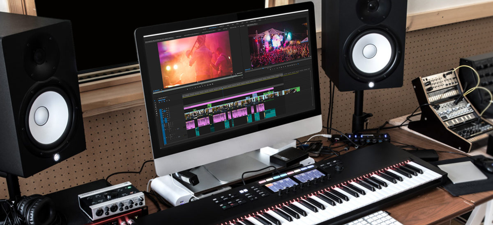

How music synchronization works
{kind=link}

These days, licensing your music to a product advertisement is viewed as a golden career opportunity. It offers another way to be paid for your music, and for listeners it’s become a source of music discovery, rivaling traditional mediums like radio. Music and visuals are working together more than ever before, with an industry of publishers, agencies and music supervisors working to fuse them together in impactful ways.
Music synchronization is the moody track underpinning the opening scenes of the latest Netflix hit; the catchy pop chorus in that new car advert; the rumbling hip-hop song backing up the action in this year’s video game smash. It is the track that currently exists in the public domain, licensed to feature in the latest movie, game, or TV show. Popular culture is awash with powerful syncs, and landing the right one can deliver significant opportunities, exposure and straight-up revenue to the artist.
A sync to remember
Sync means your music can pay dividends even years down the line. For example, in 2008, Australian duo Empire of the Sun’s “We Are The People” appeared in a Vodafone Deutschland ad – the song went on to top the German charts. In 2016, history repeated itself: another track from the same album popped up in a Honda commercial, prompting a US re-release that sold over a million copies, reached the top of the Billboard dance chart and was among the most Shazam-ed songs of the year.
Damian Trotter, managing director of Sony/ATV Music Publishing Australia, secured the placement. “It’s stories like this,” he says, “that really highlight how powerful a tool synchronisation can be in the way people discover — or perhaps rediscover — music, and the undeniable influence this can have on the overall success of an artist.”
LA producer Sam F’s track “Limitless” was synced in a Samsung Galaxy S8 advertisement last year, which proved instrumental in opening career doors for him. Other recent syncs include Robot Koch’s “Heart as a River” in an ad last year for the Sony Bravia TV; in January, the early 90s rave classic “Far Out” by Sonz of a Loop Da Loop received an unexpected revival in a Suzuki ad; while Diplo’s “Revolution” was even used by Bernie Sanders’ campaign for the Democratic presidential nomination.
The wealth of original programming on streaming services like Netflix has led to more sync deals, that have lead to more song for the artists behind them. Apparat’s 2011 song “Goodbye” had already been selected upon release to feature in a climactic season finale of Breaking Bad, and last year was again chosen to feature in the opening credits for hit German Netflix series Dark. The song currently has more than 5 million streams on Spotify.
The mechanics of syncing
So you want to get your tracks licensed? Here’s a quick-fire guide to the nuts and bolts of the process.
Music publishers play a key role in finding syncs for songwriters — and coming at it from the other end, there are ad agencies and music houses that specialize in bringing music and visuals together. Most licenses are non-exclusive in nature, allowing for your music to be used in multiple advertisements and soundtracks at the same time.
A sync is made possible via a music synchronization license. This allows the licensee, or purchaser, the rights to “synchronize” the music in a visual piece, such as a movie, video game or commercial. There are two different forms of copyright needed in obtaining a sync license: the master copyright, which refers to the recording itself and is typically owned by the label that owns for the recording; and the composition copyright, which is owned by the songwriter.
Martin Brem is head of music portfolio at Red Bull Music Publishing, which provides the music used by the company in its marketing. Brem stresses the importance of understanding the two different forms of copyrights involved in sync.
“If a director or a producer wants to licence a piece of music to use in a soundtrack, they will need to speak to both sides,” Brem says. “There is on one hand the master rights owner – in most cases the record label – who owns the actual recording of a song, and there is also the creator who composed the music or wrote the lyrics, who often select a publisher to manage their copyrights.”
An example that Brem uses to illustrate this is Jimi Hendrix’s iconic cover of “All Along the Watchtower”. Anyone wishing to license it for sync will need to speak to both Polydor, the record label that released Hendrix’s recorded cover, and the publishing representative of Bob Dylan, who wrote the original song in the 1960s. “Bob Dylan, of course, has veto rights as well as the Jimi Hendrix estate, so both need to be asked, which makes this process often nerve wrecking and time consuming,” he adds.
“If you look at a band,” says Brem, “there might be four members who all have a contract with a record label. If only two of these guys are responsible for writing the music — the Lennon and McCartney of the band — they might have signed a separate deal with a publishing house. In order to acquire a ‘sync’ license, you need to ask both the label and the publisher for the rights.”
In terms of getting paid, there’s good news: you generally get paid upfront when it comes to syncing. Brem explains: “It’s not like other forms of royalties, where you might be waiting around for a year or two to get paid. The relationship is also quite direct, as an advertiser cannot just go to a performing rights organisation and acquire a bulk licence on catalogue. It needs to speak directly with you, the creator, on the composition side of things.”
An agency perspective
According to Billboard, “ad agency music supervisors have risen to a level of influence on par with radio DJs.” Ad agencies can drive the success of a track, inspiring listens on other platforms.
Jonathan Mihaljevich is the managing director of Franklin Rd Music & Sound Effects, an agency based in Auckland, New Zealand, offering music licensing and supervision services to the advertising, film and television industries. One of his biggest successes was Levi’s’ 2011 award-winning Rear View Girls campaign, an unbranded viral video that was viewed 7 million times in its first two weeks and featured Amanda Blank’s “Something Bigger Something Better”.
Mihaljevich leaves no doubt that sync is an ever-growing opportunity, and has a simple explanation of why that is, and advice on how to make the most of it.
“In a sense, more screens means more opportunities to sync music,” he explains. “One sync alone may not necessarily dramatically affect an artist’s exposure to new audiences — though when that magic placement happens, within a pivotal scene of a great show or with a great piece of advertising, it can be hugely positive. Being focused and proactive with syncs can lead to unexpected opportunities.”
He’s observed an increasing willingness for artists to agree to lower fees when it comes to sync, but explains that “in terms of approvals for music selections, ultimately it still comes down to the individual songwriters and artists. It’s their work, and therefore their call on approvals at the end of the day.”
So what makes a great sync, and how do agencies track down that perfect song?
“Our job is to interpret the brief, and then lose ourselves in the script before we then deliver a shortlist of songs for the client to listen to. Budget is also a pragmatic concern. The music doesn’t have to be recognisable necessarily, and in fact, unless the brief is for something that’s crossed over and gone pop, the preference will always be for something new that works with the script.”
Ways to maximise sync success
1. Know your goals
In terms of maximising opportunities for your track being chosen for a sync, Martin Brem from Red Bull Music Publishing emphasises that it is a crowded market in the digital era.
“One big obstacle is the overall flood of music. How do you grab the attention span of a creative who is looking for music? Whether it’s a music supervisor at an advertising agency, or someone performing this role for a television show, how do you cut through the noise and reach them? It can be a matter of getting into the mindset of understanding what space your music might be suited to, or instead potentially creating the music in the first place with a mind to matching it to a particular medium.”
Brem says the competitive nature of syncs has lowered fees for the artists who are less established, though he emphasises that a give and take exists in terms of the exposure it offers.
“If you’re an artist who is starting out, Vodafone might come to you and say, ‘I love your track, we will only pay this low price as it will give you a lot of exposure’. If your goal as an artist is to get attention, then it might be worth it. We’re living in an attention economy, and a good sync might put your music in front of millions of people.”
Overall, though, revenue from sync is climbing steadily year on year, with last year’s IFPI industry report indicating growth of 2.8% in 2016, following a sharp rise of 7.0% the year before. Sync currently accounts for 2% of all global music revenue.
2. Be easy to contact
Mihaljevich recommends working with a publishing house, either via the record label’s in-house publishing unit or through a separate publishing house.
“The other pragmatic thing we would suggest is always make it simple for a music supervisor to contact you or your representatives. We’re all working to tight deadlines, and trying to find a working email address can sometimes take longer than the time we have to try to connect with you and propose a deal.”
3. Bigger isn’t always better
Oz McGuire is a music manager who works with San Francisco three-piece band the Monophonics, who had their music placed in multiple syncs after experiencing early success in a Bud Light commercial in 2012. McGuire also recommends working with a good publisher.
“Bigger is not always better, because if you find a niche publisher who gives you the time of day and has a good track record, this might be better than the publishing division of a major label that doesn’t return your emails. And for new artists I think the most important thing is building your fan base and creating buzz, clever marketing and social media will break through all the other noise.
“Steer away from companies asking for a monthly fee, instead do a little research on who is placing music on the TV shows you like and send them an organic link on Twitter. Save your money for gear and beer!”